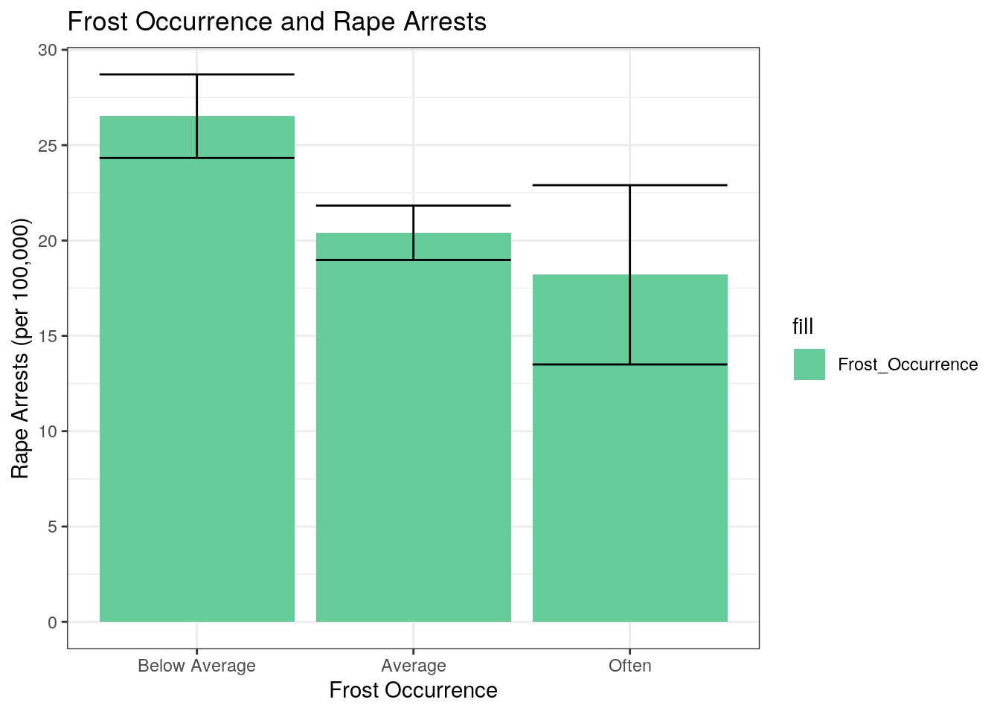
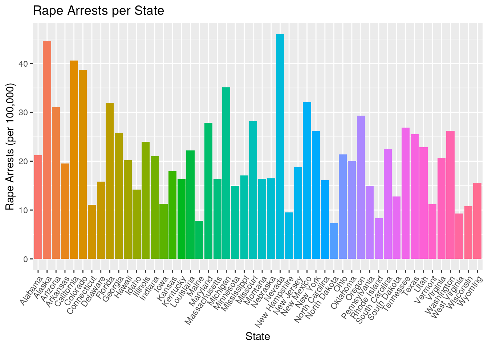
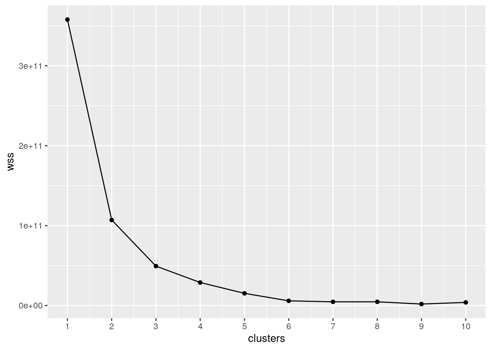
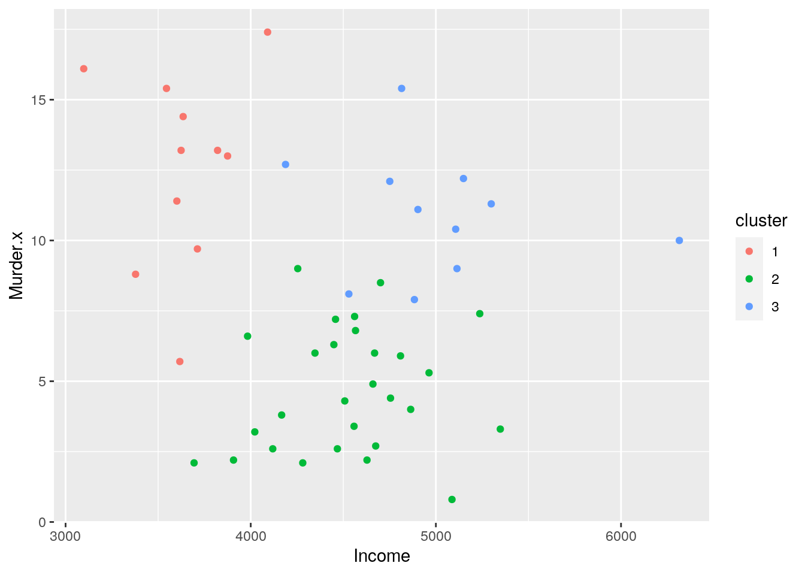
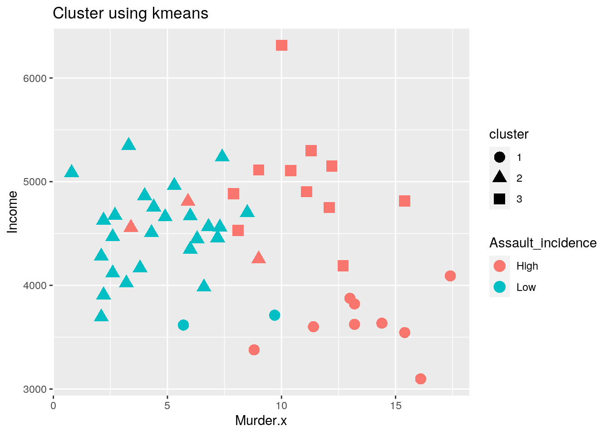

January 1, 0001
Data Wrangling and Data Exploration
Packages:
library(datasets)
# install.packages('tidyverse')
library(tidyr)
library(dplyr)
library(ggplot2)
library(cluster)Introduction
This dataset is about the types of arrests in the US and specific descriptives about each state. The “US Arrests” dataset contiains the variables: State, Murder, Assault, Urban pop, and Rape. The “state.x77” dataset contains the variables: State, Population, Income, Life Exp, Murder, HS Grad, Frost, and Area. These datasets were found in library(datasets). I used these data sets to see the difference between states with variables that aren’t common and due to the raising assault incidences I became interested in this topic. I selected Texas to be the state where the arrests were examined in this project. I expect a highter assault inidicence with higher illiteracy rates.
Tidying and Joining Dataset:
Arrests <- setNames(cbind(rownames(USArrests), USArrests, row.names = NULL),
c("State", "Murder", "Assault", "Urban Pop", "Rape"))
Arrests## State Murder Assault Urban Pop Rape
## 1 Alabama 13.2 236 58 21.2
## 2 Alaska 10.0 263 48 44.5
## 3 Arizona 8.1 294 80 31.0
## 4 Arkansas 8.8 190 50 19.5
## 5 California 9.0 276 91 40.6
## 6 Colorado 7.9 204 78 38.7
## 7 Connecticut 3.3 110 77 11.1
## 8 Delaware 5.9 238 72 15.8
## 9 Florida 15.4 335 80 31.9
## 10 Georgia 17.4 211 60 25.8
## 11 Hawaii 5.3 46 83 20.2
## 12 Idaho 2.6 120 54 14.2
## 13 Illinois 10.4 249 83 24.0
## 14 Indiana 7.2 113 65 21.0
## 15 Iowa 2.2 56 57 11.3
## 16 Kansas 6.0 115 66 18.0
## 17 Kentucky 9.7 109 52 16.3
## 18 Louisiana 15.4 249 66 22.2
## 19 Maine 2.1 83 51 7.8
## 20 Maryland 11.3 300 67 27.8
## [ reached 'max' / getOption("max.print") -- omitted 30 rows ]state <- setNames(cbind(rownames(state.x77), state.x77, row.names = NULL),
c("State", "Population", "Income", "Illiteracy", "Life Exp",
"Murter", "HS Grad", "Frost", "Area"))
colnames(state) <- c("State", "Population", "Income", "Illiteracy",
"Life Exp", "Murder", "HS Grad", "Frost", "Area")The columns were renamed so the two datasets would have the same column name to join later. Fullarrests is a dataset with all combined data by “State” which was the common variable between the two datasets. There were 0 cases that were dropped after join. A problem that would occur is that there is a lot of variable. Joining a large datawet could make it messy.
Selectedarrests is a dataset used to tidy up the dataset and focus on a few varaibles. The selected variables in the dataset was chossen because they are numeric.
Joining/Merging
state <- as.data.frame((state))
fullarrests <- full_join(Arrests, state, by = "State")
fullarrests## State Murder.x Assault Urban Pop Rape Population Income Illiteracy
## 1 Alabama 13.2 236 58 21.2 3615 3624 2.1
## 2 Alaska 10.0 263 48 44.5 365 6315 1.5
## 3 Arizona 8.1 294 80 31.0 2212 4530 1.8
## 4 Arkansas 8.8 190 50 19.5 2110 3378 1.9
## 5 California 9.0 276 91 40.6 21198 5114 1.1
## 6 Colorado 7.9 204 78 38.7 2541 4884 0.7
## 7 Connecticut 3.3 110 77 11.1 3100 5348 1.1
## Life Exp Murder.y HS Grad Frost Area
## 1 69.05 15.1 41.3 20 50708
## 2 69.31 11.3 66.7 152 566432
## 3 70.55 7.8 58.1 15 113417
## 4 70.66 10.1 39.9 65 51945
## 5 71.71 10.3 62.6 20 156361
## 6 72.06 6.8 63.9 166 103766
## 7 72.48 3.1 56 139 4862
## [ reached 'max' / getOption("max.print") -- omitted 43 rows ]# fulldataa <-Arrests %>% arrange(State) %>%
# bind_cols(arrange(state,State))
selectedarrest <- fullarrests %>% select(-Murder.y) %>% mutate(assault_incidence = case_when(Assault >
170 ~ "High", Assault <= 170 ~ "Low"))
selectedarrest <- selectedarrest %>% mutate_at(2:12, function(x) as.numeric(as.character(x)))
as.data.frame(head(selectedarrest))## State Murder.x Assault Urban Pop Rape Population Income Illiteracy
## 1 Alabama 13.2 236 58 21.2 3615 3624 2.1
## 2 Alaska 10.0 263 48 44.5 365 6315 1.5
## 3 Arizona 8.1 294 80 31.0 2212 4530 1.8
## 4 Arkansas 8.8 190 50 19.5 2110 3378 1.9
## 5 California 9.0 276 91 40.6 21198 5114 1.1
## 6 Colorado 7.9 204 78 38.7 2541 4884 0.7
## Life Exp HS Grad Frost Area assault_incidence
## 1 69.05 41.3 20 50708 High
## 2 69.31 66.7 152 566432 High
## 3 70.55 58.1 15 113417 High
## 4 70.66 39.9 65 51945 High
## 5 71.71 62.6 20 156361 High
## 6 72.06 63.9 166 103766 Highuntidy <- selectedarrest %>% pivot_wider(names_from = "assault_incidence",
values_from = "Assault")
tidy <- untidy %>% pivot_longer(cols = c("High", "Low"), names_to = "assault_incidence",
values_to = "Assault")
tidy## # A tibble: 100 x 13
## State Murder.x `Urban Pop` Rape Population Income Illiteracy `Life Exp`
## <fct> <dbl> <dbl> <dbl> <dbl> <dbl> <dbl> <dbl>
## 1 Alab… 13.2 58 21.2 3615 3624 2.1 69.0
## 2 Alab… 13.2 58 21.2 3615 3624 2.1 69.0
## 3 Alas… 10 48 44.5 365 6315 1.5 69.3
## 4 Alas… 10 48 44.5 365 6315 1.5 69.3
## 5 Ariz… 8.1 80 31 2212 4530 1.8 70.6
## 6 Ariz… 8.1 80 31 2212 4530 1.8 70.6
## 7 Arka… 8.8 50 19.5 2110 3378 1.9 70.7
## 8 Arka… 8.8 50 19.5 2110 3378 1.9 70.7
## 9 Cali… 9 91 40.6 21198 5114 1.1 71.7
## 10 Cali… 9 91 40.6 21198 5114 1.1 71.7
## # … with 90 more rows, and 5 more variables: `HS Grad` <dbl>, Frost <dbl>,
## # Area <dbl>, assault_incidence <chr>, Assault <dbl>Wrangling
moddata1 <- fullarrests %>% filter(State == "Texas") %>% select(Assault,
Income)
moddata1 %>% mutate(assault_incidence = case_when(Assault > 170 ~
"high", Assault <= 170 ~ "low"))## Assault Income assault_incidence
## 1 201 4188 highas.data.frame(head(moddata1))## Assault Income
## 1 201 4188moddata2 <- fullarrests %>% group_by(State) %>% arrange(desc("Urban Pop")) %>%
mutate(Rape_per_UrbanPop = Rape/`Urban Pop`)
as.data.frame(head(moddata2))## State Murder.x Assault Urban Pop Rape Population Income Illiteracy
## 1 Alabama 13.2 236 58 21.2 3615 3624 2.1
## 2 Alaska 10.0 263 48 44.5 365 6315 1.5
## 3 Arizona 8.1 294 80 31.0 2212 4530 1.8
## 4 Arkansas 8.8 190 50 19.5 2110 3378 1.9
## 5 California 9.0 276 91 40.6 21198 5114 1.1
## 6 Colorado 7.9 204 78 38.7 2541 4884 0.7
## Life Exp Murder.y HS Grad Frost Area Rape_per_UrbanPop
## 1 69.05 15.1 41.3 20 50708 0.3655172
## 2 69.31 11.3 66.7 152 566432 0.9270833
## 3 70.55 7.8 58.1 15 113417 0.3875000
## 4 70.66 10.1 39.9 65 51945 0.3900000
## 5 71.71 10.3 62.6 20 156361 0.4461538
## 6 72.06 6.8 63.9 166 103766 0.4961538selectedarrest %>% summarize(mean_Income = mean(Income), sd_Income = sd(Income),
variance = var(Income, y = NULL, na.rm = FALSE), count_Income = n(),
quantile = qnorm(p = 0.5, mean = mean_Income, sd = sd_Income),
min_Income = min(Income), max_Income = max(Income), distinct_Income = n_distinct(Income),
cor = cor(Murder.x, Income))## mean_Income sd_Income variance count_Income quantile min_Income max_Income
## 1 4435.8 614.4699 377573.3 50 4435.8 3098 6315
## distinct_Income cor
## 1 50 -0.215205selectedarrest %>% group_by(assault_incidence) %>% summarize(mean_murder = mean(Murder.x),
sd_murder = sd(Murder.x), min_murder = min(Murder.x), max_murder = max(Murder.x),
variance = var(Murder.x, y = NULL, na.rm = FALSE))## # A tibble: 2 x 6
## assault_incidence mean_murder sd_murder min_murder max_murder variance
## <chr> <dbl> <dbl> <dbl> <dbl> <dbl>
## 1 High 11.4 3.37 3.4 17.4 11.3
## 2 Low 4.74 2.28 0.8 9.7 5.19The datasets moddata1 and moddata2 whos the six dply functions (filter, select, arrange, group_by, mutate, summarize). Mutate was used to fine the proportion of Rape and Urban population.
Visualizing
selectedarrest## State Murder.x Assault Urban Pop Rape Population Income Illiteracy
## 1 Alabama 13.2 236 58 21.2 3615 3624 2.1
## 2 Alaska 10.0 263 48 44.5 365 6315 1.5
## 3 Arizona 8.1 294 80 31.0 2212 4530 1.8
## 4 Arkansas 8.8 190 50 19.5 2110 3378 1.9
## 5 California 9.0 276 91 40.6 21198 5114 1.1
## 6 Colorado 7.9 204 78 38.7 2541 4884 0.7
## 7 Connecticut 3.3 110 77 11.1 3100 5348 1.1
## Life Exp HS Grad Frost Area assault_incidence
## 1 69.05 41.3 20 50708 High
## 2 69.31 66.7 152 566432 High
## 3 70.55 58.1 15 113417 High
## 4 70.66 39.9 65 51945 High
## 5 71.71 62.6 20 156361 High
## 6 72.06 63.9 166 103766 High
## 7 72.48 56.0 139 4862 Low
## [ reached 'max' / getOption("max.print") -- omitted 43 rows ]ggplot(selectedarrest, aes(Income, Illiteracy)) + geom_point(aes(color = assault_incidence)) +
xlab("Income as of July 1, 1974 (per capita)") + ylab("Illiteracy (%)") +
labs(colour = "Assault Incidence") + theme(axis.text.x = element_text(angle = 45,
hjust = 1)) + ggtitle("Income and Illiteracy Percentage") +
scale_y_continuous(breaks = seq(0, 3, 0.5)) + theme(axis.line = element_line(colour = "darkblue",
size = 0.5, linetype = "solid")) + scale_color_manual(values = c("#E69F00",
"56B4E9")) This show the plot betwene income levels, illiteracy percentage, and the assault incidence.
This show the plot betwene income levels, illiteracy percentage, and the assault incidence.
selectedarrest2 <- selectedarrest %>% mutate(Frost_Occurrence = case_when(Frost >
156 ~ "Often", Frost <= 156 & Frost >= 52 ~ "Average", Frost <
52 ~ "Below Average"))
selectedarrest2## State Murder.x Assault Urban Pop Rape Population Income Illiteracy
## 1 Alabama 13.2 236 58 21.2 3615 3624 2.1
## 2 Alaska 10.0 263 48 44.5 365 6315 1.5
## 3 Arizona 8.1 294 80 31.0 2212 4530 1.8
## 4 Arkansas 8.8 190 50 19.5 2110 3378 1.9
## 5 California 9.0 276 91 40.6 21198 5114 1.1
## 6 Colorado 7.9 204 78 38.7 2541 4884 0.7
## 7 Connecticut 3.3 110 77 11.1 3100 5348 1.1
## Life Exp HS Grad Frost Area assault_incidence Frost_Occurrence
## 1 69.05 41.3 20 50708 High Below Average
## 2 69.31 66.7 152 566432 High Average
## 3 70.55 58.1 15 113417 High Below Average
## 4 70.66 39.9 65 51945 High Average
## 5 71.71 62.6 20 156361 High Below Average
## 6 72.06 63.9 166 103766 High Often
## 7 72.48 56.0 139 4862 Low Average
## [ reached 'max' / getOption("max.print") -- omitted 43 rows ]ggplot(selectedarrest2, aes(Frost_Occurrence, y = Rape, fill = "Frost_Occurrence")) +
geom_bar(stat = "summary", fun.y = "mean") + geom_errorbar(stat = "summary") +
theme(axis.text.x = element_text(angle = 0, hjust = 0.5)) +
ggtitle("Frost Occurrence and Rape Arrests") + ylab("Rape Arrests (per 100,000)") +
xlab("Frost Occurrence") + labs(colour = "Frost Occurrence") +
scale_y_continuous(breaks = seq(0, 30, 5)) + scale_x_discrete(limits = c("Below Average",
"Average", "Often")) + scale_fill_manual(values = c("#66CC99",
"#E69F00", "#56B4E9")) + theme_bw()
This graph plots the occurrence of frost days with the number of rape arrests with standard errorbar.
ggplot(selectedarrest, aes(State)) + geom_bar(aes(y = Rape, fill = State),
stat = "summary", fun.y = "mean") + theme(axis.text.x = element_text(angle = 55,
hjust = 1)) + ylab("Rape Arrests (per 100,000)") + ggtitle("Rape Arrests per State") +
theme(legend.position = "none")
This show the number of rape arrests for each individual state.
Dimensionality Reduction
wss <- vector()
for (i in 1:10) {
temp <- selectedarrest %>% dplyr::select(Murder.x, Assault,
"Urban Pop", Rape, Population, Income, "Illiteracy",
"Life Exp", "HS Grad", Frost, Area) %>% kmeans(., i)
wss[i] <- temp$tot.withinss
}
ggplot() + geom_point(aes(x = 1:10, y = wss)) + geom_path(aes(x = 1:10,
y = wss)) + xlab("clusters") + scale_x_continuous(breaks = 1:10)
cluster_dat <- selectedarrest %>% dplyr::select(Murder.x, Assault,
"Urban Pop", Rape, Population, Income, "Illiteracy", "Life Exp",
"HS Grad", Frost, Area)
kmeans1 <- cluster_dat %>% scale %>% kmeans(3)
kmeansclust <- cluster_dat %>% mutate(cluster = as.factor(kmeans1$cluster))
kmeansclust %>% ggplot(aes(Income, Murder.x, color = cluster)) +
geom_point()
kmeansclust %>% mutate(Assault_incidence = selectedarrest$assault_incidence) %>%
ggplot(aes(Murder.x, Income, color = Assault_incidence, shape = cluster)) +
geom_point(size = 4) + ggtitle("Cluster using kmeans")
pam1 <- cluster_dat %>% pam(k = 3)
pancluster <- cluster_dat %>% mutate(cluster = as.factor(pam1$clustering))
pancluster %>% ggplot(aes(Income, Murder.x, color = cluster)) +
geom_point()
pancluster %>% group_by(cluster) %>% summarize_if(is.numeric,
mean, na.rm = T)## # A tibble: 3 x 12
## cluster Murder.x Assault `Urban Pop` Rape Population Income Illiteracy
## <fct> <dbl> <dbl> <dbl> <dbl> <dbl> <dbl> <dbl>
## 1 1 8.58 173. 64.7 18.7 4884. 4336. 1.33
## 2 2 10 263 48 44.5 365 6315 1.5
## 3 3 6.42 162. 67.8 24.0 3445. 4494. 0.9
## # … with 4 more variables: `Life Exp` <dbl>, `HS Grad` <dbl>, Frost <dbl>,
## # Area <dbl>Kmeans was used to create a cluster graph.